◆ Édition 1 · 30 mai 2026
Le trail en photos
Départ dans les rues de Thorey-sous-Charny, chemins de l'Auxois, arrivées, podiums, côtelettes au feu et grandes tablées : revivez la première édition du Trail Côtelettes.


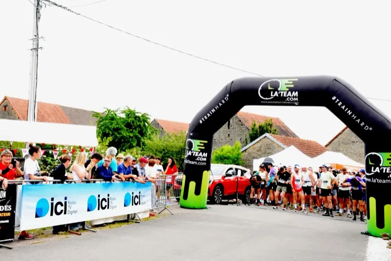

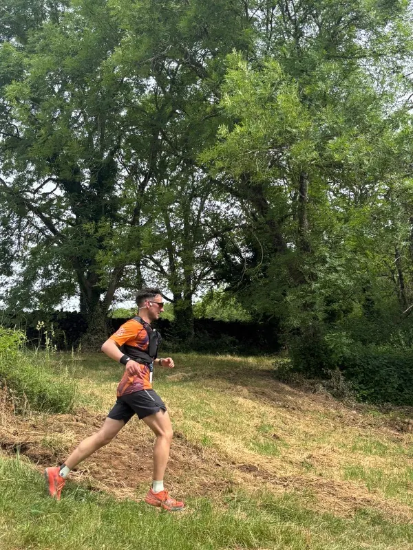


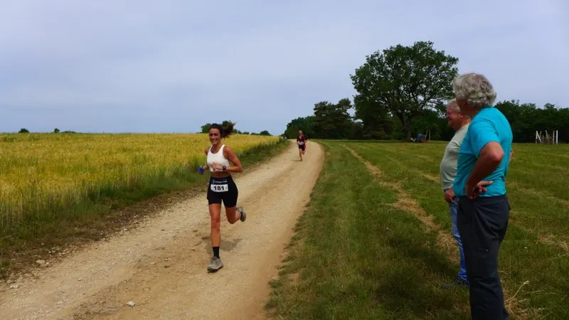


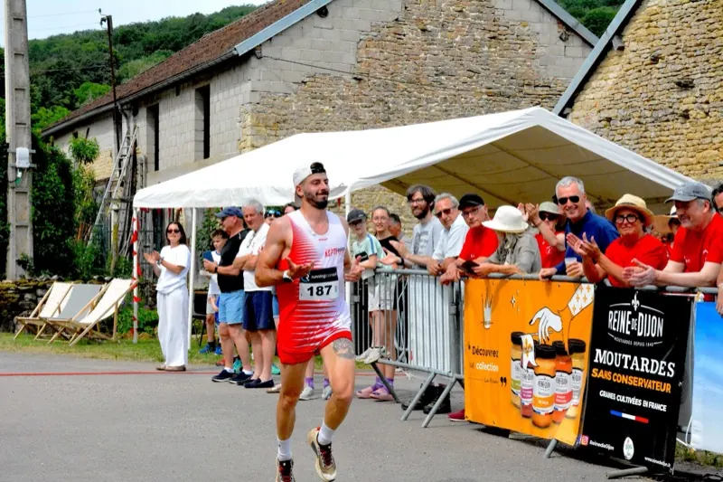

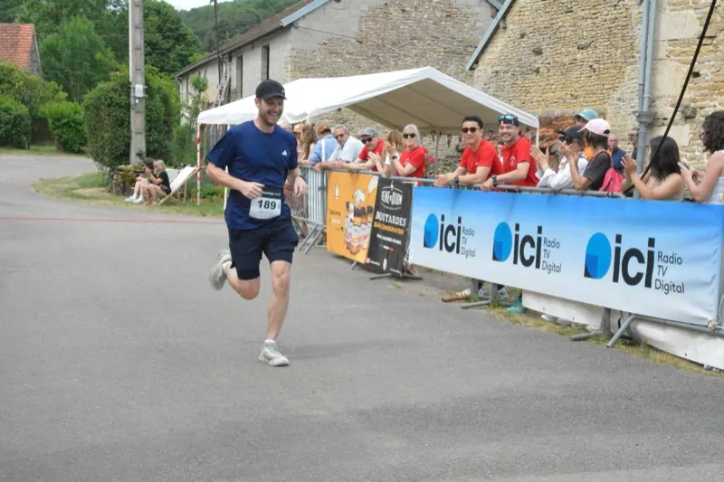


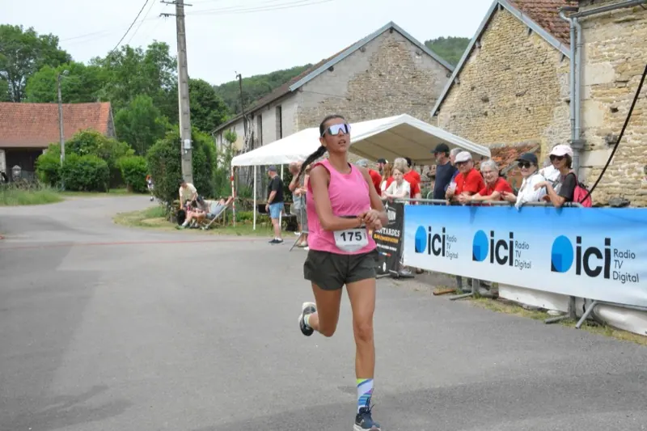

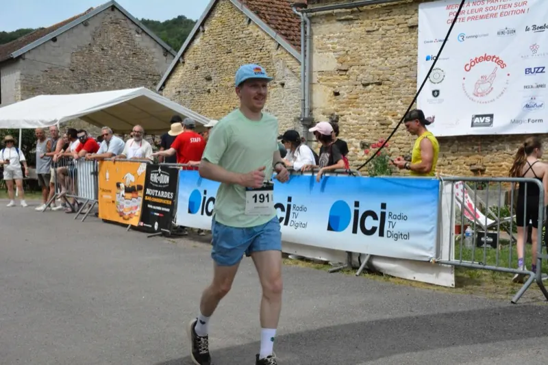

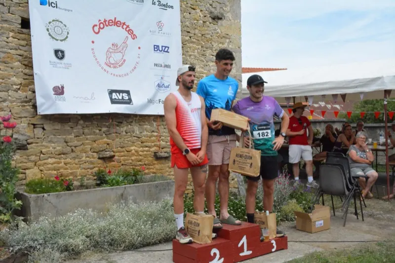


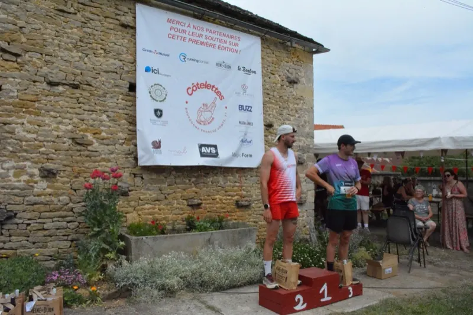

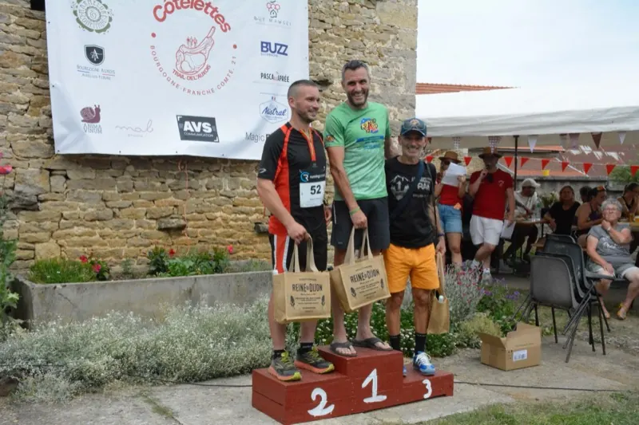

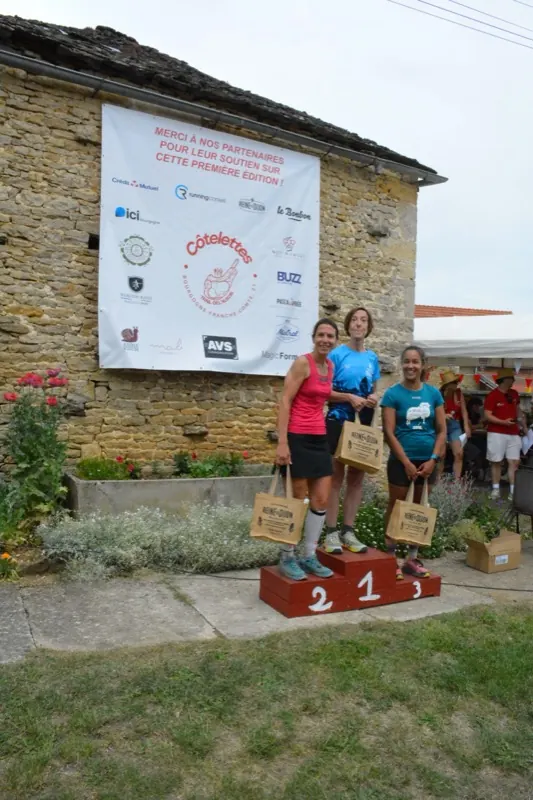

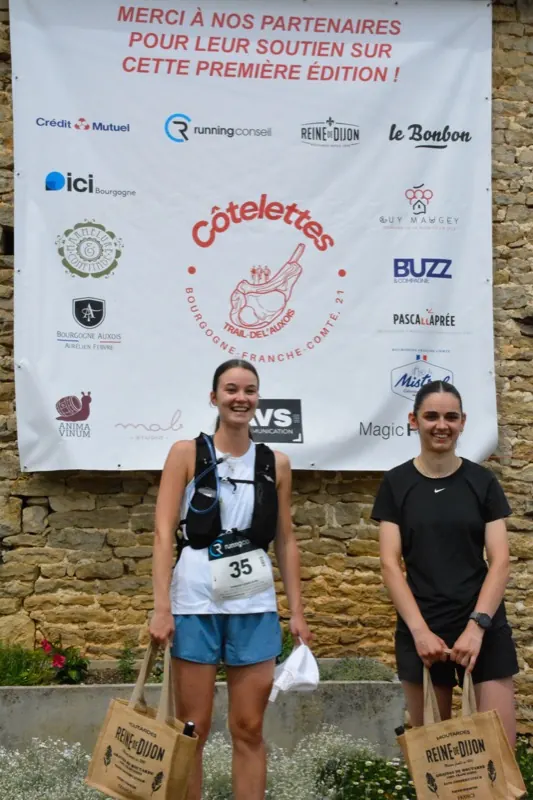

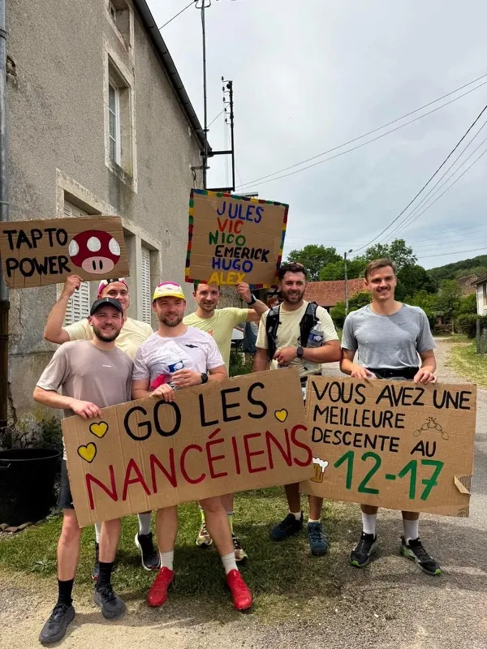


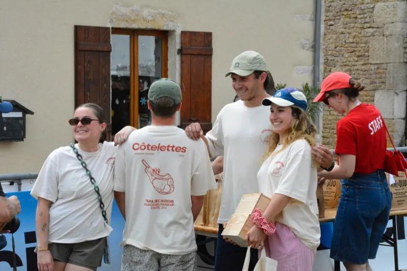

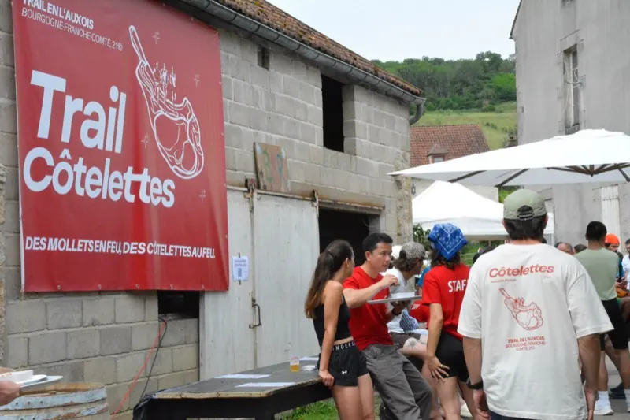

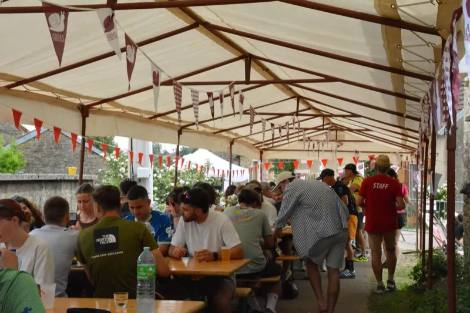

Tu t'es reconnu·e ? Partage tes photos avec nous sur Instagram !